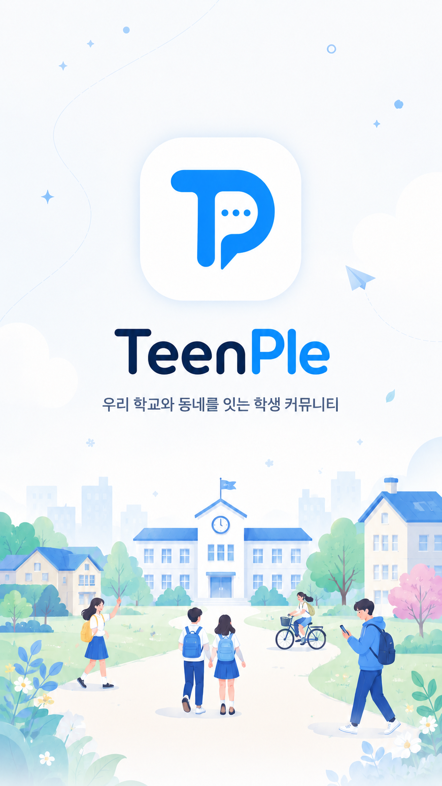
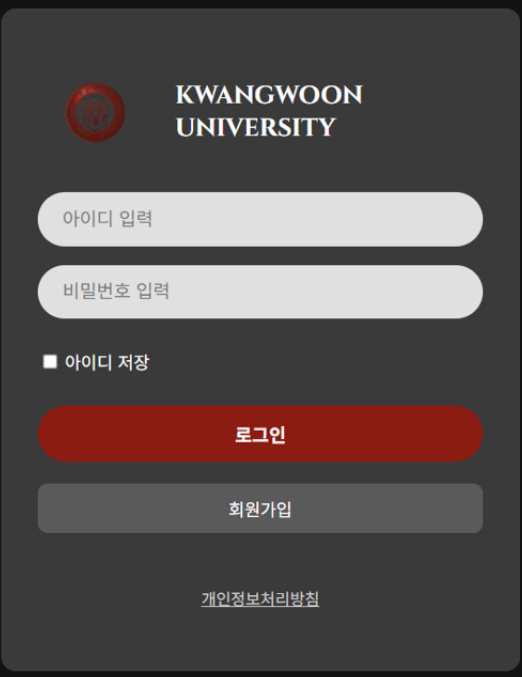

DB
2025.10 — Now
TeenPle Backend
학교 인증 기반 익명 커뮤니티의 인증, 게시글, 댓글, 반응, 알림, 채팅, 신고/제재 API 구현
MAIN서비스의 성능과 사용자 경험을 함께 고민합니다. 조회 구조, 검색 방식, 트랜잭션 경계처럼 품질을 좌우하는 지점을 재현하고, 로그와 수치로 개선 결과를 검증하는 백엔드 개발자입니다.
이력서와 포트폴리오의 핵심 사례를 기준으로 백엔드 역량을 재구성했습니다.
학교 인증 기반 익명 커뮤니티의 인증, 게시글, 댓글, 반응, 알림, 채팅, 신고/제재 API 구현
MAIN트랜잭션 경계와 외부 서버 통신 병목을 분리해 동시 주문 안정성 개선
수강신청 트래픽 상황에서 강의 목록 조회 N+1과 쿼리 구조 개선
k6, 로그, 쿼리 분석으로 병목을 정량화하고 개선 전후를 비교합니다.
N+1, 집계 쿼리, 정렬 병목, 인덱스 설계를 서비스 쿼리 패턴 기준으로 개선합니다.
락, 캐시, 배치 반영, 트랜잭션 경계를 비교해 병목의 본질에 맞는 구조를 선택합니다.
광운대학교 · 2025.10
한국데이터산업진흥원 · 2025.09
한국산업인력공단 · 2025.12
rkddk7165
각 카드는 상세 페이지로 연결됩니다. 친구분 사이트와 같은 카드형 프로젝트 탐색 흐름입니다.

학교 인증 기반 익명 커뮤니티
조회수 write 병목, 검색 API, 목록 조회 N+1, 댓글 COUNT 인덱스까지 운영을 가정한 성능 개선 사례를 정리했습니다.

가상 드론 기반 음식 배달 웹 서비스
외부 Python 서버 통신을 트랜잭션 밖 비동기 파이프라인으로 분리하고 동시 주문 안정성을 개선했습니다.

수강신청 및 학사 행정 시스템
500명 동시 접속 환경에서 강의 목록 조회 지연을 재현하고 JPA N+1과 조회 구조를 개선했습니다.
검색, 조회, 트랜잭션, 동시성처럼 사용자가 직접 느끼는 성능 문제를 끝까지 추적하고 개선하는 일을 좋아합니다.
Java · Spring · Performance Troubleshooting